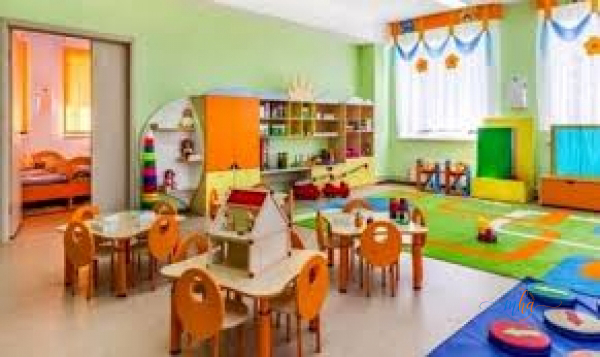
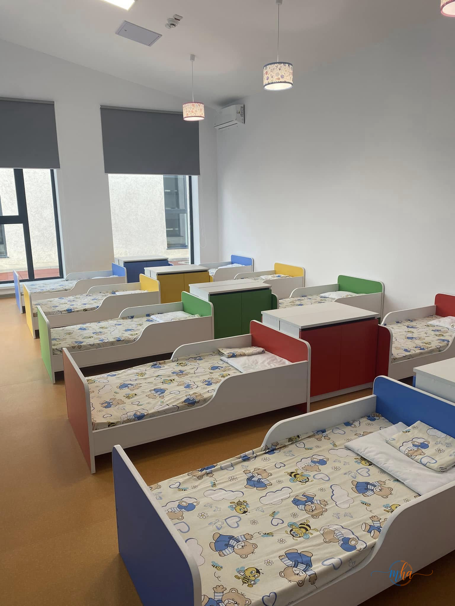
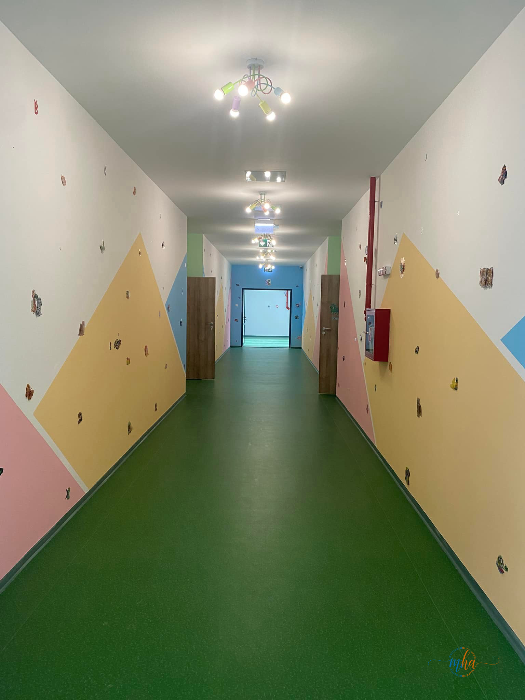

Înscrierile pentru anul școlar 2026–2027 la creșele din Drobeta-Turnu Severin au început luni, 25 mai 2026. Părinții care doresc un loc pentru copilul lor au la dispoziție o fereastră scurtă de depunere a dosarelor: 25–29 mai 2026, de luni până vineri, între orele 08:00 și 18:00.
În total, în municipiu sunt disponibile 168 de locuri distribuite în cele șapte structuri de creșă aflate în administrarea Direcției de Asistență Socială Drobeta-Turnu Severin (DASDTS).

Sală de activități la una dintre creșele din municipiul Drobeta-Turnu Severin.
Câte locuri sunt disponibile la fiecare creșă
Repartizarea locurilor disponibile pentru anul școlar 2026–2027 este următoarea:
| Unitate | Locuri disponibile |
|---|---|
| Creșa Drobeta-Turnu Severin | 22 |
| Creșa Piticot | 19 |
| Creșa Micul Prinț | 15 |
| Creșa Căsuța Poveștilor | 24 |
| Creșa Prichindel | 23 |
| Creșa Mica Sirenă | 54 |
| Creșa Albă ca Zăpada | 11 |
| TOTAL | 168 |
Cea mai mare capacitate disponibilă se află la Creșa Mica Sirenă, cu 54 de locuri libere, urmată de Creșa Căsuța Poveștilor (24 locuri) și Creșa Prichindel (23 locuri).
Copiii beneficiază de activități educative și de socializare în cadrul creșelor din municipiu.
Unde și cum se depun dosarele
Dosarele pot fi depuse în două moduri:
Fizic – la sediul Creșei Mica Sirenă, situată pe strada Păcii nr. 3B, Drobeta-Turnu Severin, în intervalul orar 08:00–18:00, de luni până vineri.
Online – prin e-mail, la adresa creșa@dasdts.ro
Acte necesare pentru înscrierea la creșă
- Cerere-tip (se ridică de la sediul creșei sau se solicită prin e-mail)
- Copie după certificatul de naștere al copilului
- Copii ale actelor de identitate ale părinților sau reprezentantului legal
- Adeverință de la angajator sau documente privind concediul de creștere a copilului
- Alte documente necesare pentru criteriile de departajare, după caz

Spațiile de odihnă din creșele din Drobeta-Turnu Severin sunt dotate cu paturi individuale pentru fiecare copil.
Criterii de departajare în caz de suprasolicitare
Dacă numărul cererilor va depăși numărul locurilor disponibile la o anumită unitate, departajarea candidaților se va face luând în considerare mai multe criterii:
- Vârsta copilului
- Apropierea domiciliului sau a locului de muncă al părinților față de unitatea aleasă
- Situația profesională a părinților
- Familiile monoparentale
- Existența altor copii aflați deja în întreținere sau înscriși în aceeași unitate

Creșele din Drobeta-Turnu Severin dispun de spații moderne, prietenoase și sigure pentru cei mici.
Când se afișează lista copiilor admiși
Lista copiilor admiși va fi afișată pe 18 iunie 2026, la ora 14:00.
Părinții care nu vor fi selectați în prima etapă pot solicita informații suplimentare la reprezentanții Direcției de Asistență Socială Drobeta-Turnu Severin.
Contact și informații suplimentare
- Perioada de depunere dosare: 25–29 mai 2026
- Program: luni–vineri, 08:00–18:00
- Adresă fizică: Creșa Mica Sirenă, strada Păcii nr. 3B, Drobeta-Turnu Severin
- E-mail: creșa@dasdts.ro
- Total locuri disponibile: 168 locuri în 7 unități
- Afișare liste admisi: 18 iunie 2026, ora 14:00
Termenul limită pentru depunerea dosarelor este vineri, 29 mai 2026. Locurile sunt limitate, iar dosarele incomplete nu vor fi luate în considerare. Pentru orice întrebare, părinții se pot adresa direct reprezentanților Direcției de Asistență Socială.